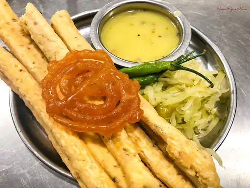

Pizza:-
My favorite food is pizza. It's a delicious Italian dish. It's made with dough, sauce, cheese and toppings.I love the combination of its crispy crust, tangy tomato sauce and gooey melted cheese.Pizza is a versatile food that can be enjoyed for any meal of the day. there is no other food I compare to the taste and smell of a freshly baked pizza. pizza is easy to eat and share with friends and family.The best thing about pizza is that it's a food that brings people together, whether it's quick lunch or a late night snack. No matter how much I eat, I never fail to feel hungry when my favorite pizza is in front of me.Dhokla:-
My favorite food is Gujarati Dhokla. Gujrat's most frequently cookde and savored cuisines are the soft, spongy and square-shaped pieces served with chutney. there's never a wrong time to eat Dhokla. you can have it for lunch, dinner, as a side dish, in the main course, or for breakfast. you can also serve it to your guests as snacks with tea. To add rich flavors and a delicious aroma to Dhokla, give a Tadka of curry leaves, mustard and cumin seeds. Made of chickpeas and fermented rice, every food-lover must try Dhokla in Gujarat.
